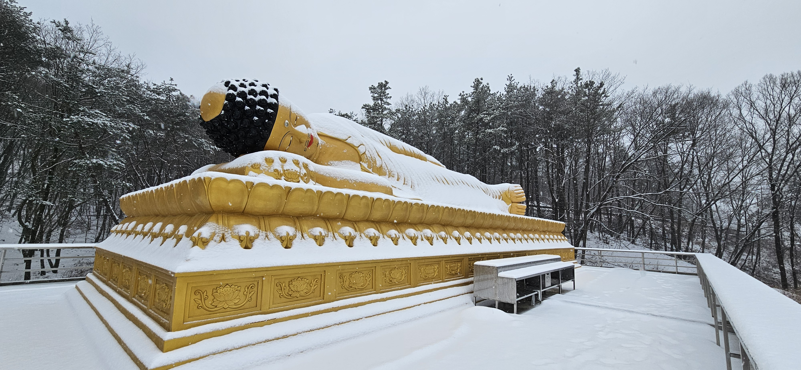

홈 / 성주대재 봉행사찰 / 신고달사
신고달사는 경기도 여주시 북내면 상교리에 자리한 사찰로, 성주대재가 봉행되는 도량입니다. 태고종 소속의 사찰이며, 성주대재보존회와 함께 매년 성주대재를 봉행하고 있습니다.
신고달사의 연혁과 상세 소개 내용은 준비 중입니다. 추후 업데이트될 예정입니다.
TEMPLE VIEW

오시는 길
주소
경기도 여주시 북내면 상교리 125